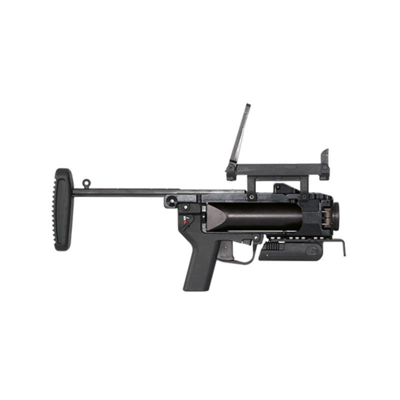

Le lance grande HK 269 est un lance grenade pouvant être utilisé en stannd alone (seul) ou sous le canon du HK 416.
Il peut lancer 3 types de grande : explosive, fumigène ou exercice (répandant une poudre orange).

En cas non départ du coup, renouveler la percussion.
Si le coup ne part toujours pas, mettre le lance grenade en en sûreté et attendre 3 minutes en conservant le canon dans une direction non dangereuse.
Après les 3 minutes, déverouiller le canon pour le faire pivoter et voir la chambre.
Contrôler la percussion de la grenade puis l'extraire.
Tir sur cible SC2 Fixe
Distance : 50 m en postion debout puis 100 et 150 m en position intermédiaire.
Cadre d'ordre de l'instructeur de tir :